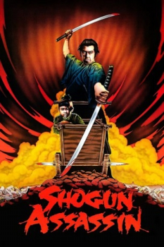
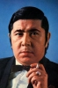
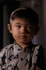
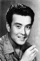
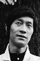

Country:Japan, 85 minutes
Spoken languages:English
Genres:Action
Director(s):Robert Houston, Kenji Misumi
Writer(s):Kazuo Koike, Robert Houston
Video Codec:Unknown
Number: 264


Certification:
Storyline:
A Shogun who grew paranoid as he became senile sent his ninjas to kill his samurai. They failed but did kill the samurai’s wife. The samurai swore to avenge the death of his wife and roams the countryside with his toddler son in search of vengeance.
Cast:    
Medium: Original DVD,
Loaned: No
Aspect ratio: Unknown